import geopandas, pandas, libpysal.weights as weights, contextily
import matplotlib.pyplot as plt
import numpy
import cenpy
import osmnx
import seaborn
import rasterio
from rasterio.plot import show as rioshow14 Spatial Feature Engineering
In machine learning and data science, we are often equipped with tons of data. Indeed, given the constellation of packages to query data services, free and open source data-sets, and the rapid and persistent collection of geographical data, there is simply too much data to even represent coherently in a single, tidy fashion. However, we often need to be able to construct useful features from this rich and deep sea of data.
Where data is available, but not yet directly usable, feature engineering helps to construct representations or transformations of the original data that are more useful for modeling a given phenomenon of interest. In traditional machine learning, feature engineering involves applying additional domain knowledge to raw information in order to structure it in a manner that is meaningful for a model. Often, this involves some sort of transformation of the original dataset, which is a well-studied concept in both classical statistics and remains so in machine learning methods. While feature engineering always relies on this implicit domain knowledge, it is an extremely important part of adapting general-purpose algorithms to unique or distinctive problems facing the every-day data scientist.
Geography is one of the most high-quality, ubiquitous ways to introduce domain knowledge into a problem: everything has a position in both space and time. And, while things that happen near one another in time do not necessarily have a fundamental relationship, things that are near one another are often related. Thus, space is the ultimate linkage key, allowing us to connect different datasets together in order to improve our models and our predictions. This means that, even for aspatial, “non-geographic” data, you can use spatial feature engineering to create useful, highly relevant features for your analysis.
At its core, spatial feature engineering is the process of developing additional information from raw data using geographic knowledge. This distilling of information can occur between datasets, where geography is used to link information in separate datasets together; or within datasets, where geography can be used to augment the information available for one sample by borrowing from nearby ones. This chapter is structured following that distinction: for cases where geography connects different datasets, we adopt the term “Map Matching”, often used in industry; while we use the mirroring concept of “Map Synthesis” describing the use of geographical structure to derive new features from a given dataset. Technically speaking, some of the methods we review are similar across these two cases, or even the same; however, they can be applied in the context of “matching” or “synthesis”, and we consider those conceptually different, hence their inclusion in both sections. Throughout the chapter, we use the Airbnb nightly rental prices in San Diego, as well as auxiliary datasets such as elevation or census demographics.
Throughout this chapter, we will use the same dataset to which we want to append more information or augment, and we will do so through leveraging geography. For the illustration, we will use the set of Airbnb properties we have used in Chapter 11. Let’s read it:
airbnbs = geopandas.read_file("../data/airbnb/regression_db.geojson")14.1 What is spatial feature engineering?
At its core, spatial feature engineering is the process of developing additional information from raw data using geographic knowledge. This synthesis could occur between datasets, where geography is used to link samples in separate datasets together; or within datasets, where geography can be used to borrow information from nearby samples. Building linkages between datasets is often called “Map Matching”, while we use the term “Map Synthesis” to describe the use of geographical structure to derive new features from existing data. We will cover both kinds of feature engineering.
To help us discuss this, a vocabulary is helpful. We will cover a few different kinds of features in this chapter. All of them can be constructed using either Map Synthesis or Map Matching operations: - A spatial summary feature measures the attributes of observations that have some pre-specified spatial relationship with our target observations. This includes: - Taking the average or median value of features within a neighborhood of each target observation. - The spatial lag, used in previous chapters of this book, e.g., Chapters 3, 6, and 11, is a kind of spatial summary feature, since it reflects the average value of the data in the neighborhood around each point. - Other kinds of spatial summary features might include the count of observations within a given distance or the standard deviation of ten nearest observations. - Summary features generally include interpolated features which involve a transfer of information from one spatial support to another, such as when the target locations are not the same as the locations in our ancillary data. Interpolated features become significantly more complex as well when the data is areal, as will be discussed later in this chapter. - A proximity feature measures the distance from a target observation to some other observation or position in the map. This might be done in a map matching context, as we did before with the distance to Balboa Park in Chapter 11, or it might be done in a map synthesis context by measuring the distance to the nearest other observation.
14.2 Feature engineering using map matching
Space is the ultimate linkage key; map matching is all about exploiting this asset. Geographic information is collected at different scales, aggregated using bespoke geographic delineations, and ultimately stored in different datasets. Modeling and machine learning usually require the use of data aligned and coherently structured; to bring disparate geo-datasets together, the data scientist needs to be able to transfer information expressed for one geography into another. This is where map matching comes to the rescue. By using geographical location, we can connect datasets that have no common key or that are otherwise completely unrelated. This is a “magic trick” that we can pull off because of location that would be much harder, or impossible, with data lacking spatial information.
The details, and difficulty, of this transfer of information from one geography to another one depend on the nature of the “source” and “target”, and on the precision with which we want to perform such transfer. In this context, there is always an inevitable trade-off between precision and sophistication: more precise transfer is usually possible at the expense of more advanced and involved techniques. Their additional cost in applying them, both in terms of cognitive load on the data scientist’s part or in terms of computation, must be weighted in on an individual basis: sometimes we need the best possible estimates, at all costs; sometimes “good enough” is, well, good enough.
In this section, we cover a few cases that we consider represent the most common and widely used approaches. We begin with situations where we have two point datasets and all we need to calculate are descriptive statistics of one dataset to the observations in the other. We switch the type of data and consider how to attach information from a continuous grid, stored in a raster file, to a set of points. Then we show the equivalent case for “moving” information for a polygon geography to a point dataset. These are all cases that, in their simplest form, involve mostly traditional GIS operations (e.g., buffer construction, spatial joins) and little in the way of statistical modeling. As an example of a case that is more involved, we cover the transfer of information from a set of points to another set of points in different locations, and of a polygon geography to another different polygon geography. For these final cases, but also more generally, we try to include examples that capture the essence of the method but keep the technique as simple as possible. For almost any of these cases we cover, the reader can find more sophisticated techniques that usually yield more accurate estimates. Where possible, we try to signpost these.
14.2.1 Counting nearby features
A first, conceptually straightforward, approach is to augment our dataset by counting how many points of a different dataset are in the vicinity of each observation. For example, we might want to know how many bars and restaurants each Airbnb has within a given radius. This count can then become an additional feature of our dataset, stored in a new column of airbnbs.
To obtain information on the location of restaurants and bars, we can download it from OpenStreetMap directly using osmnx. We first query all the points of interest (POIs) within the area our points cover, and then filter out everything except restaurants and bars. For that, we require a polygon that covers all our airbnbs points. From Chapter 8, we can recall that there are a few different hulls that can be used. We’ll use the Convex Hull here (Fig. XXX1XXX), which is the smallest convex polygon that covers all the points in the set.
airbnbs_ch = airbnbs.union_all().convex_hull
geopandas.GeoSeries([airbnbs_ch]).plot()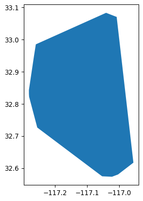
Using this polygon, we can use the osmnx package to fetch POIs from OpenStreetMap. We can make our request more manageable by only requesting POIs that fall within specific categories. Below, we’ll request POIs within San Diego that are “restaurants” or “bars,” according to their metadata stored in OpenStreetMap. Once returned, we only use a few columns to keep the table small and tidy:
%%time
pois = osmnx.features_from_polygon(
airbnbs_ch, tags={"amenity": ["restaurant", "bar"]}
).reset_index()
pois = pois.rename(
columns=dict(id='osmid')
)[
[
"osmid",
"amenity",
"cuisine",
"name",
"geometry",
]
]CPU times: user 85.8 ms, sys: 4.16 ms, total: 90 ms
Wall time: 90.2 msThe code snippet above sends a query to the OpenStreetMap server to fetch the data on amenities. Note that it requires internet connectivity to work. If you are working on the book without connectivity, a cached version of the dataset is available on the data folder and can be read as:
pois = geopandas.read_file("../data/cache/sd_pois.gpkg")This provides us with every location within our convex hull that is tagged in the metadata stored in OpenStreetMap as a “restaurant” or “bar”. Overall, this provides us with about 1300 POIs:
pois.groupby("amenity").amenity.count()amenity
bar 308
restaurant 1060
Name: amenity, dtype: int64Once loaded into pois as a GeoDataFrame, we use the code below to generate Figure XXX2XXX, which takes a peek at their location, as compared with Airbnb spots:
# Set up figure and axis
f, ax = plt.subplots(1, figsize=(12, 12))
# Plot Airbnb properties
airbnbs.plot(ax=ax, marker=".")
# Plot POIs in red
pois.plot(ax=ax, color="r")
# Add Carto's Voyager basemap
contextily.add_basemap(
ax,
crs=airbnbs.crs.to_string(),
source=contextily.providers.CartoDB.Voyager,
)
# Remove axes
ax.set_axis_off()
# Display
plt.show()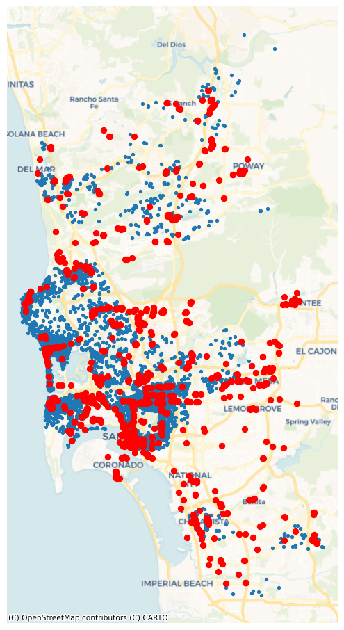
Now for some feature engineering. It may be extremely useful to know whether an Airbnb is located in a “hot” location, with a lot of restaurants and bars to choose from. Alternatively, if Airbnbs are very remote, they might not be as lucrative for short, expensive “city-break” reservations. That is, Airbnb users may decide to reserve stays where there are a lot of dining and drinking opportunities, and thus may be willing to pay more for the same accommodation. We might be able to predict prices better if we know about the drinking and dining scene near the Airbnb.
Thus, we can engineer features in the Airbnb data using the nearby POIs. To do this, we can create a new feature for the Airbnb dataset –that is, a new column in airbnbs– which incorporates information about how many POIs are nearby each property. This kind of “feature counting” is useful in applications where the mere presence of nearby features can affect the quantity we are modeling.
To do this kind of feature engineering, let us first walk through what we need to do at a conceptual level:
- Decide what is nearby. This will dictate how far we go from each Airbnb when counting the number of “nearby” bars and restaurants. For this example, we will use a 500-meter buffer, which is approximately the distance of a leisurely ten-minute walk.
- For each Airbnb, determine whether POIs are within a leisurely ten-minute walk.
- Count how many POIs are within the specified radius of each Airbnb.
At the end of this procedure, we have the number of bars and restaurants that are within a leisurely walk of the Airbnb, which might be useful in predicting the price of each Airbnb.
Let us now translate the list above into code. For part 1., we need to be able to measure distances in meters. However, airbnbs is originally expressed in degrees, since it is provided in terms of locations in latitude and longitude:
airbnbs.crs<Geographic 2D CRS: EPSG:4326>
Name: WGS 84
Axis Info [ellipsoidal]:
- Lat[north]: Geodetic latitude (degree)
- Lon[east]: Geodetic longitude (degree)
Area of Use:
- name: World.
- bounds: (-180.0, -90.0, 180.0, 90.0)
Datum: World Geodetic System 1984 ensemble
- Ellipsoid: WGS 84
- Prime Meridian: GreenwichIn addition, the pois are also provided in terms of their latitude and longitude:
pois.crs<Geographic 2D CRS: EPSG:4326>
Name: WGS 84
Axis Info [ellipsoidal]:
- Lat[north]: Geodetic latitude (degree)
- Lon[east]: Geodetic longitude (degree)
Area of Use:
- name: World.
- bounds: (-180.0, -90.0, 180.0, 90.0)
Datum: World Geodetic System 1984 ensemble
- Ellipsoid: WGS 84
- Prime Meridian: GreenwichTherefore, we need to convert this into a coordinate system that is easier to work with. Here, we will use a projection common for mapping in California, the California Albers projection:
airbnbs_albers = airbnbs.to_crs(epsg=3311)
pois_albers = pois.to_crs(epsg=3311)pois_albers.crs<Projected CRS: EPSG:3311>
Name: NAD83(HARN) / California Albers
Axis Info [cartesian]:
- X[east]: Easting (metre)
- Y[north]: Northing (metre)
Area of Use:
- name: United States (USA) - California.
- bounds: (-124.45, 32.53, -114.12, 42.01)
Coordinate Operation:
- name: California Albers
- method: Albers Equal Area
Datum: NAD83 (High Accuracy Reference Network)
- Ellipsoid: GRS 1980
- Prime Meridian: GreenwichWith this, we can create the radius of 500 meters around each Airbnb. This is often called buffering, where a shape is dilated by a given radius.
airbnbs_albers["buffer_500m"] = airbnbs_albers.buffer(500)Now, abb_buffer contains a 500-meter circle around each Airbnb.
Using these, we can count the number of POIs that are within these areas using a spatial join. Spatial joins link geometries based on spatial relationships (or predicates). Here, we need to know the relationship: pois within airbnb_buffers, where within is the predicate relating pois to airbnb_buffers. Predicates are not always reversible: no airbnb_buffer can be within a poi. In geopandas, we can compute all pairs of relations between the pois and airbnb_buffers efficiently using the sjoin function, which takes a predicate argument defining the requested relationship between the first and second argument.
# Spatial join, appending attributes from right table to left one
joined = geopandas.sjoin(
# Right table - POIs
pois_albers,
# Left table - Airbnb with the geometry reset from the original
# points to the 500-meter buffer and selecting only `id` and
# `buffer_500m` column
airbnbs_albers.set_geometry("buffer_500m")[["id", "buffer_500m"]],
# Operation (spatial predicate) to use for the spatial join (`within`)
predicate="within",
)The resulting joined object contains a row for every pair of POI and Airbnb that are linked. From there, we can apply a group-by operation, using the Airbnb ID, and count how many POIs each Airbnb has within 500 meters of distance:
# Group POIs by Airbnb ID (`id`)
poi_count = (
joined.groupby(
"id"
# Keep only POI id column (`osmid`)
)[
"osmid"
# Count POIs by Airbnb + convert Series into DataFrame
]
.count()
.to_frame("poi_count")
)
# Print top of the table
poi_count.head()| poi_count | |
|---|---|
| id | |
| 6 | 12 |
| 5570 | 7 |
| 9553 | 12 |
| 38245 | 1 |
| 69385 | 8 |
The resulting Series is indexed on the Airbnb IDs, so we can assign it to the original airbnbs table. In this case, we know by construction that missing Airbnbs in poi_count do not have any POI within 500m, so we can fill missing values in the column with zeros.
airbnbs_w_counts = airbnbs_albers.merge(
poi_count, left_on="id", right_index=True, how="left"
).fillna({"poi_count": 0})We can visualize now (Fig. XXX3XXX) the distribution of counts to get a sense of how “well-served” Airbnb properties are arranged over space:
# Set up figure and axis
f, ax = plt.subplots(1, figsize=(9, 9))
# Plot quantile map of No. of POIs for every Airbnb
airbnbs_w_counts.plot(
column="poi_count",
scheme="quantiles",
alpha=0.5,
legend=True,
ax=ax,
)
# Add basemap
contextily.add_basemap(
ax,
crs=airbnbs_albers.crs.to_string(),
source=contextily.providers.CartoDB.Voyager,
)
# Remove axes
ax.set_axis_off();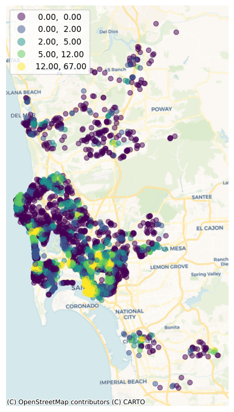
14.2.2 Assigning point values from surfaces: elevation of Airbnbs
We have just seen how to count points around each observation in a point dataset. In other cases, we might be confronted with a related but different challenge: transferring the value of a particular point in a surface to a point in a different dataset.
To make this more accessible, let us illustrate the context with an example question: what is the elevation of each Airbnb property? To answer this question, we require, at least, the following:
- A sample of Airbnb property locations.
- A dataset of elevation. We will use here the NASA DEM surface for the San Diego area.
We use the code below, which opens and plot the file with elevation data, to generate Figure XXX4XXX:
# Open file
dem = rasterio.open("../data/nasadem/nasadem_sd.tif")
# Set up figure and axis
f, ax = plt.subplots()
# Display elevation data on created axis
rioshow(dem, ax=ax)
# Remove axes
ax.set_axis_off();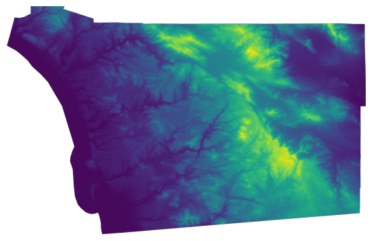
Let’s first check the CRS is aligned with our sample of point locations:
print(dem.crs)EPSG:4326We have opened the file with rasterio, which has not read the entire dataset just yet. This feature allows us to use this approach with files that are potentially very large, as only requested data is read into memory. To extract a discrete set of values from the elevation surface in dem, we can use sample. For a single location, this is how it works:
list(dem.sample([(-117.24592208862305, 32.761619109301606)]))[array([7], dtype=int16)]Now, we can apply this logic to a sequence of coordinates. For that, we need to extract them from the geometry object:
# Create table with XY coordinates of Airbnb locations
abb_xys = pandas.DataFrame(
{"X": airbnbs.geometry.x, "Y": airbnbs.geometry.y}
# Convert from DataFrame to array of XY pairs
).to_records(index=False)And then we can apply the same logic as above to sample elevation for the list of Airbnb locations:
# Save results as a DataFrame
elevation = pandas.DataFrame(
# Sequence of elevation measurements sampled at the Airbnb locations
dem.sample(abb_xys),
# Name of the column to be created to store elevation
columns=["Elevation"],
# Row index, mirroring that of Airbnb locations
index=airbnbs.index,
)
# Print top of the table
elevation.head()| Elevation | |
|---|---|
| 0 | 112 |
| 1 | 3 |
| 2 | 99 |
| 3 | 114 |
| 4 | 30 |
Now that we have a table with the elevation of each Airbnb property, we can plot the site elevations on a map (Fig. XXX5XXX) for visual inspection:
# Set up figure and axis
f, ax = plt.subplots(1, figsize=(9, 9))
# Join elevation data to original Airbnb table
airbnbs.join(
elevation
# Plot elevation at each Airbnb location as a quantile choropleth
).plot(
column="Elevation",
scheme="quantiles",
legend=True,
alpha=0.5,
ax=ax,
)
# Add Esri's terrain basemap
contextily.add_basemap(
ax,
crs=airbnbs.crs.to_string(),
source=contextily.providers.Esri.WorldTerrain,
alpha=0.5,
)
# Remove axes
ax.set_axis_off();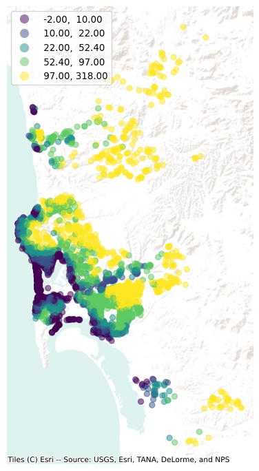
14.2.3 Point interpolation using scikit-learn
In the previous example, we have transferred information from a surface (stored in a raster layer) to a set of points; in other words, we have gone from surface to points. Sometimes, however, we do not have the luxury of a ready-made surface. Instead, all we have available is a set of points with measurements for the variable of interest that do not match the points we want the information for. In this situation, a solution we can rely on is spatial interpolation. For a continuous geographical field measured at a set of points, spatial interpolation methods provide us a way to guess at the value a field would take at sites we do not measure.
There are many sophisticated methods with which this can be done. Kriging, common in the sub-field of spatial statistics called “geostatistics”, is one such practice based on the theory of Gaussian Process Regression. Another common approach, geographically weighted regression, provides unique model estimates at every control point, as well as predictions for places where there is no data. Here, though, we’ll use a fairly basic \(k\)-nearest neighbor prediction algorithm from scikit-learn to demonstrate the process.
from sklearn.neighbors import KNeighborsRegressorThis algorithm will select the nearest ten listings, then compute the prediction using a weighted average of these nearest observations. To keep predictions relatively consistent, we will build an interpolation only for listings that are entire homes/apartments with two bedrooms:
two_bed_homes = airbnbs[
airbnbs["bedrooms"] == 2 & airbnbs["rt_Entire_home/apt"]
]Once subset, we can extract the XY coordinates for each of them into a two-dimensional array:
two_bed_home_locations = numpy.column_stack(
(two_bed_homes.geometry.x, two_bed_homes.geometry.y)
)To plot the interpolated surface, we must also construct a grid of locations for which we will make predictions. This can be done using numpy.meshgrid, which constructs all the combinations of the input dimensions as a grid of outputs.
# Extract bounding box of Airbnb locations
xmin, ymin, xmax, ymax = airbnbs.total_bounds
# Generate X and Y meshes for the space within the bounding box
x, y = numpy.meshgrid(
numpy.linspace(xmin, xmax), numpy.linspace(ymin, ymax)
)To build an intuition on what they are we create Figure XXX6XXX, which visualizes both meshes side-by-side:
# Set up figure
f, ax = plt.subplots(1, 2)
# Plot X mesh
ax[0].imshow(x)
# Plot Y mesh
ax[1].imshow(y)
# Label X mesh
ax[0].set_title("X values")
# Label Y mesh
ax[1].set_title("Y values")
# Display
plt.show()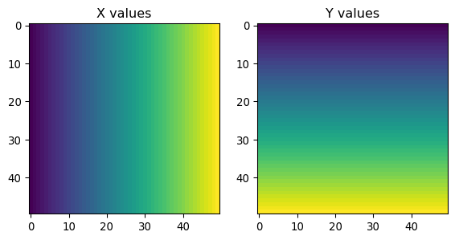
With these coordinates, we can make a GeoDataFrame containing the grid cells at which we would like to predict:
# Bind a 1D (flattened) of X and Y meshes into a 2D array
grid = numpy.column_stack((x.flatten(), y.flatten()))
# Convert a 1D (flattened) version of X and Y meshes into a geo-table
grid_df = geopandas.GeoDataFrame(
geometry=geopandas.points_from_xy(x=x.flatten(), y=y.flatten())
)We can visualize this grid together with the original Airbnb locations (Fig. XXX7XXX) to get a better sense of what we have just built:
# Plot grid points with size 1
ax = grid_df.plot(markersize=1)
# Plot on top Airbnb locations in red
two_bed_homes.plot(ax=ax, color="red")
# Add basemap
contextily.add_basemap(
ax,
crs=two_bed_homes.crs.to_string(),
source=contextily.providers.CartoDB.VoyagerNoLabels,
)
# Remove axes
ax.set_axis_off();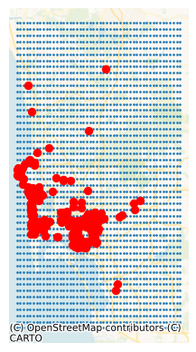
With this done, we can now construct the predictions. First we train the model:
model = KNeighborsRegressor(n_neighbors=10, weights="distance").fit(
two_bed_home_locations, two_bed_homes.price
)And then we predict at the grid cell locations:
predictions = model.predict(grid)The result can be displayed as a continuous choropleth (Fig. XXX8XXX), for example:
ax = grid_df.plot(predictions)
ax.set_axis_off();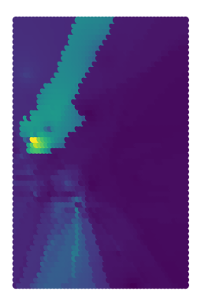
The map is a result not only of the underlying data but also the algorithm we have used. For example, you can see in Figure XXX9XXX (generated with the code below) that the surface gets smoother as you increase the number of nearest neighbors to consider.
# Set up figure and 8 axes
f, ax = plt.subplots(1, 8, figsize=(16, 4))
# Loop over eight values equally spaced between 2 and 100
for i, k_neighbors in enumerate(
numpy.geomspace(2, 100, 8).astype(int)
):
# Select axis to plot estimates for that value of k
facet = ax[i]
# Set up a KNN regressor instance with k_neighbors neighbors
predictions = (
KNeighborsRegressor(
n_neighbors=k_neighbors,
weights="distance"
# Fit instance to the 2-bed subset
)
.fit(
two_bed_home_locations,
two_bed_homes.price
# Get predictions for locations on the grid
)
.predict(grid)
)
# Plot predictions
grid_df.plot(predictions, ax=facet)
# Remove axis
facet.axis("off")
# Set axis title
facet.set_title(f"{k_neighbors} neighbors")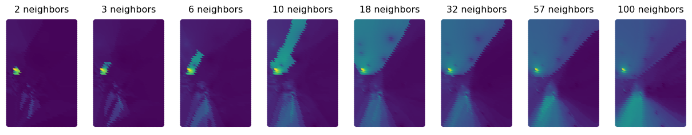
Focusing in on central San Diego tells the story a bit more clearly, since there are interesting points there to show. The increasing number of nearest neighbors increases the smoothness of the interpolated surface. To visualize a zoom into the region, we begin by extracting its bounding box:
central_sd_bounds = [-117.179832, 32.655563, -117.020874, 32.769909]
(
central_xmin,
central_ymin,
central_xmax,
central_ymax,
) = central_sd_boundsAnd repeating the process above for this area, including building the meshes of coordinates:
# Build X and Y meshes
central_x, central_y = numpy.meshgrid(
numpy.linspace(central_xmin, central_xmax),
numpy.linspace(central_ymin, central_ymax),
)
# Bind X and Y meshes in a 2D array
central_grid = numpy.column_stack(
(central_x.flatten(), central_y.flatten())
)
# Bind X and Y meshes in a geo-table
central_grid_df = geopandas.GeoDataFrame(
geometry=geopandas.points_from_xy(
x=central_x.flatten(), y=central_y.flatten()
)
)Finally, we can reproduce the sequence of figures with different values of K only for the central part of the San Diego area (Fig. XXX10XXX):
# Set up figure and subplot
f, ax = plt.subplots(1, 5, figsize=(16, 4), sharex=True, sharey=True)
# Loop over five values equally spaced between 2 and 100
for i, k_neighbors in enumerate(
numpy.geomspace(2, 100, 5).astype(int)
):
# Select axis to plot estimates for that value of k
facet = ax[i]
# Set up a KNN regressor instance with k_neighbors neighbors
predictions = (
KNeighborsRegressor(
n_neighbors=k_neighbors,
weights="distance"
# Fit instance to the 2-bed subset
)
.fit(
two_bed_home_locations,
two_bed_homes.price
# Get predictions for locations on the grid
)
.predict(central_grid)
)
# Plot predictions
central_grid_df.plot(predictions, ax=facet)
# Remove axis
facet.axis("off")
# Set axis title
facet.set_title(f"{k_neighbors} neighbors")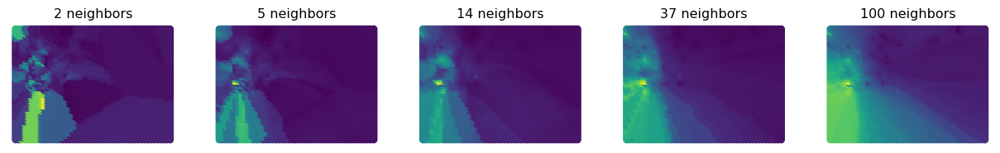
Plenty more of these methods are implemented in scikit-learn.neighbors, as well as kriging methods in GSTools (Müller and Schüler 2021) and geographically weighted regression in mgwr (Oshan et al. 2019).
14.2.4 Polygon to point
We now move on to a case where the information we are interested in matching to our set of points is stored in a polygon geography. For example, we would like to know the population density of the neighborhood in which each Airbnb is located. This is conceptually similar to the sampling example above, but in the case the information we want to sample is not a surface but a geo-table of polygons. To determine density, we will download population estimates at the census tract level, and “transfer” those estimates over to each Airbnb point. Geographically, the only challenge here is finding the containing polygon for each point, and then performing what is in spatial databases parlance known as a “spatial join”, by which we link the two layers through their spatial connection.
Let us pull down the number of inhabitants from the American Community Survey for tracts in San Diego:
try:
acs = cenpy.products.ACS()
sd_pop = acs.from_msa(
"San Diego, CA", level="tract", variables=["B02001_001E"]
)
sd_pop.to_file("../data/cache/sd_census.gpkg", driver='GPKG')
except:
print("Remote loading failed...")Remote loading failed...The code snippet above sends a query to the Census Bureau server to fetch the data for San Diego. Note that it requires internet connectivity to work. If you are working on the book without connectivity, a cached version of the dataset is available on the data folder and can be read as:
sd_pop = geopandas.read_file("../data/cache/sd_census.gpkg")And calculate population density:
sd_pop["density"] = (
sd_pop["B02001_001E"] / sd_pop.to_crs(epsg=3311).area
)Now, to “transfer” density estimates to each Airbnb, we can rely on the spatial join in geopandas:
j = geopandas.sjoin(airbnbs, sd_pop.to_crs(airbnbs.crs))The result is a table with one row per Airbnb and one column for each attribute we originally had for properties, as well as those of the tract where the area is located:
j.info()<class 'geopandas.geodataframe.GeoDataFrame'>
RangeIndex: 6110 entries, 0 to 6109
Data columns (total 28 columns):
# Column Non-Null Count Dtype
--- ------ -------------- -----
0 accommodates 6110 non-null int32
1 bathrooms 6110 non-null float64
2 bedrooms 6110 non-null float64
3 beds 6110 non-null float64
4 neighborhood 6110 non-null str
5 pool 6110 non-null int32
6 d2balboa 6110 non-null float64
7 coastal 6110 non-null int32
8 price 6110 non-null float64
9 log_price 6110 non-null float64
10 id 6110 non-null int32
11 pg_Apartment 6110 non-null int32
12 pg_Condominium 6110 non-null int32
13 pg_House 6110 non-null int32
14 pg_Other 6110 non-null int32
15 pg_Townhouse 6110 non-null int32
16 rt_Entire_home/apt 6110 non-null int32
17 rt_Private_room 6110 non-null int32
18 rt_Shared_room 6110 non-null int32
19 geometry 6110 non-null geometry
20 index_right 6110 non-null int64
21 GEOID 6110 non-null str
22 B02001_001E 6110 non-null float64
23 NAME 6110 non-null str
24 state 6110 non-null str
25 county 6110 non-null str
26 tract 6110 non-null str
27 density 6110 non-null float64
dtypes: float64(8), geometry(1), int32(12), int64(1), str(6)
memory usage: 1.5 MB14.2.5 Area to area interpolation
The final case of map matching we consider is transfer of information from one polygon/areal geography to a different one. This is a common use-case when an analysis requires data that is provided at different levels of aggregation and different boundary delineations.
There is a large literature around this problem under the umbrella of dasymetric mapping (Eicher and Brewer 2001). The conceptual idea is relatively straightforward: we want to apportion values from one set of polygons to another based on how much “geography” is shared. In its simplest case, we can do this based on area. We will assign values from the former geography to the latter one based on how much they share. Let us illustrate this with an example. We will call the geography for which we have data the “source”, and that to which we want to transfer data the “target”. Let’s say we have a population count measure for each of three source polygons, 1, 2, 3, and we have a target polygon A for which we require an estimated population. If the intersection of polygon A with each of the source polygons amounts to 50%, 30%, and 20% of the total area of polygon A, respectively, then the population estimate for A will be a weighted average between the rates in 1, 2, and 3, where the weights are 0.5, 0.3, and 0.2, respectively.
We could also go in the other direction. If we had total population for polygon A, but population was not reported for polygons 1, 2, 3, we could use areal interpolation to allocate the population from A (now the source polygon) to each of the three target polygons. Polygon 1 would get 0.5 of the population of A, polygon 2 would get 0.3 of A’s population, and C the remainder. Here we are assuming the area of A is completely exhausted by the areas of 1, 2, and 3, and that the latter polygons do not overlap with each other. Of course, underlying this exercise is the implicit assumption that the values we are interested in are uniformly distributed within each polygon in the source and target. In some cases, this is a valid assumption or, at least, it does not introduce critical errors; in others, this is not acceptable. Dasymetric mapping has proposed a large amount of sophistications that try to come up with more realistic estimates and that can incorporate additional information.
To implement dasymetric mapping in Python, the best option is tobler, a package from the Pysal federation designed exactly for this goal. We will show here the simplest case, that of areal interpolation where apportioning is estimated based on area, but the package also provides more sophisticated approaches.
from tobler.area_weighted import area_interpolateFor the example, we need two polygon layers. We will stick with San Diego and use the set of Census Tracts read above, and a grid layer built using the H3 hexagonal spatial index (Brodsky 2018). Our goal will be to create population estimates for each hexagonal cell.
First, let us load the H3 grid:
h3 = geopandas.read_file("../data/h3_grid/sd_h3_grid.gpkg")We are ready to interpolate:
# Area interpolation from polygon geotable to polygon geo-table
interpolated = area_interpolate(
# Source geo-table (converted to EPSG:3311 CRS)
source_df=sd_pop.to_crs(epsg=3311),
# Target geo-table (converted to EPSG:3311 CRS)
target_df=h3.to_crs(epsg=3311),
# Extensive variables in `source_df` to be interpolated (e.g. population)
extensive_variables=["B02001_001E"],
# Intensive variables in `source_df` to be interpolated (e.g. density)
intensive_variables=["density"],
)There is quite a bit going on in the cell above, let us unpack it:
- Remember this method apportions data values based on area, so it makes sense to have an accurate estimate for the extent of each polygon. To do that, we convert each geography to Albers Equal (
EPSG:3311), which is expressed in meters, usingto_crs. - The method
area_interpolatethen takes the source and the targetGeoDataFrameobjects using the same naming convention we have in our explanation. - In addition, we need to specify which variables we would like to interpolate. here, Tobler makes a distinction:
- Extensive variables, or absolute values such as counts, aggregates, etc. (which we use for population,
B02001_001E) - Intensive variables, such as rates, ratios, etc. (which we select for density, as it is the ratio of population over area)
- Extensive variables, or absolute values such as counts, aggregates, etc. (which we use for population,
The interpolated output object is a geo-table that contains the target polygons and estimates of the variable(s) we originally had for the source geography (population and density in this case). Figure XXX11XXX (generated with the code below) illustrates the transfer of information from one geography to the other with for the case of total population estimates.
# Set up figure and axes
f, axs = plt.subplots(1, 3, figsize=(18, 6))
# Extract bounding box from output for easier visual comparison
minX, minY, maxX, maxY = interpolated.total_bounds
# Reproject tracts to EPSG:331
sd_pop.to_crs(
epsg=3311
# Clip to the bounding box
).cx[
minX:maxX,
minY:maxY
# Quantile choropleth for tract population
].plot(
column="B02001_001E", scheme="quantiles", k=10, ax=axs[0]
)
# Remove axes
axs[0].set_axis_off()
# Reproject H3 hexagons to ESPG:3311
h3.to_crs(
epsg=3311
# Plot hexagons
).plot(ax=axs[1], markersize=0.5)
# Remove axes
axs[1].set_axis_off()
# Plot hexagons with interpolated population
interpolated.plot(
column="B02001_001E", scheme="quantiles", k=10, ax=axs[2]
)
# Remove axes
axs[2].set_axis_off()
# Adjust limits of tract map to hexagons bounding box
# for easier visual comparison
axs[0].set_xlim(minX, maxX)
axs[0].set_ylim(minY, maxY)
# Display
plt.show()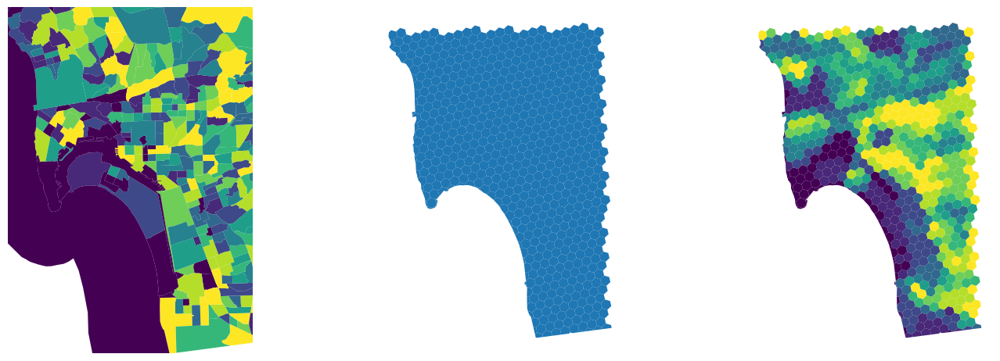
And Figure XXX12XXX, generated with the code below, shows the equivalent for population density.
# Set up figure and axes
f, axs = plt.subplots(1, 3, figsize=(18, 6))
# Extract bounding box from output for easier visual comparison
minX, minY, maxX, maxY = interpolated.total_bounds
# Reproject tracts to EPSG:331
sd_pop.to_crs(
epsg=3311
# Clip to the bounding box
).cx[
minX:maxX,
minY:maxY
# Quantile choropleth for tract population density
].plot(
column="density", scheme="quantiles", k=10, ax=axs[0]
)
# Remove axes
axs[0].set_axis_off()
# Reproject H3 hexagons to ESPG:3311
h3.to_crs(
epsg=3311
# Plot hexagons
).plot(ax=axs[1], markersize=0.5)
# Remove axes
axs[1].set_axis_off()
# Plot hexagons with interpolated population density
interpolated.plot(
column="density", scheme="quantiles", k=10, ax=axs[2]
)
# Remove axes
axs[2].set_axis_off()
# Adjust limits of tract map to hexagons bounding box
# for easier visual comparison
axs[0].set_xlim(minX, maxX)
axs[0].set_ylim(minY, maxY)
# Display
plt.show()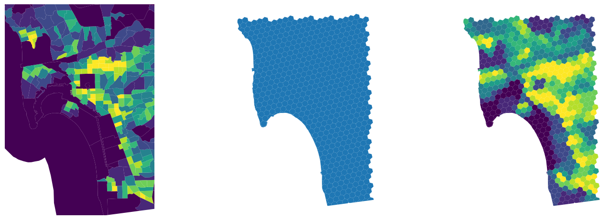
14.3 Feature engineering using map synthesis
Feature engineering with map matching is most helpful when you have additional information to use in the analysis. And, with the wealth of freely available data from censuses, satellites, and open volunteered geographic information vendors such as OpenStreetMap, map matching can be a very powerful tool for enriching and improving your analyses. However, it is sometimes also useful to only examine the data you’ve got, and use the spatial structure within to build better features or better models. While this might be done using spatially explicit models (like those covered in Chapter 11), it is also possible to use map synthesis to build spatial features and improve model performance.
There is an extensive amount of map synthesis features. In fact, many of them are usually derived for specific use cases and following the intuition of domain experts that can take technical guidance along the lines presented here. We discuss two main ones as an illustration, but reiterate that the sky really is the limit in this category. First, we will return to spatial summary features. Second, we will examine regionalization features, which detect and leverage geographical clusters in the data to improve prediction.
14.3.1 Spatial summary features in map synthesis
Just like in map matching, you can use spatial summary features in map synthesis to build better models. One approach involves constructing spatial summary measures of your training data. This is done in the same manner as in map matching, except we now refer only to the data on hand. Thus, we may want to determine whether nearby Airbnbs are “competing” with each Airbnb. We might do this by finding the distance to the nearest Airbnb with the same number of bedrooms, since two nearby listings that also sleep the same number of people likely will compete with one another for tenants.
14.3.1.1 Counting neighbors
A useful metric to characterize an observation in your data through geography is whether it is surrounded by other observations or not. This question (and the following one we cover) is another area of geographic data science where spatial weights matrices are useful.
If we define to be “surrounded by other observations” as in “having many neighbors”, this translates into the cardinalities of a spatial weights matrix (i.e., the number of neighbors recorded in the matrix for each observation).
For example, we can “engineer a feature” that contains the number of Airbnb properties each property has within 500 meters by constructing a distance band object:
# Build distance band spatial weights matrix
d500_w = weights.DistanceBand.from_dataframe(
airbnbs_albers, threshold=500, silence_warnings=True
)And extracting its cardinalities:
card = pandas.Series(d500_w.cardinalities)The card feature we have built will pick up areas of higher concentration of Airbnb properties with higher values, as we can see in Figure XXX13XXX.
# Set up figure and axis
f, ax = plt.subplots(1)
# Append cardinalities to main Airbnb geo-table
airbnbs.assign(
card=card
# Plot cardinality quantile choropleth
).plot("card", scheme="quantiles", k=7, markersize=1, ax=ax)
# Add basemap
contextily.add_basemap(ax, crs=airbnbs.crs)
# Remove axes
ax.set_axis_off();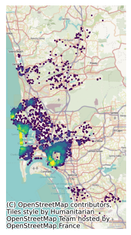
14.3.1.2 Distance buffers within a single table
If what we are interested in is finding the average number of bedrooms around each house, we might do this using a row-standardized version of the DistanceBand weight object we have just built, which considers Airbnb as “neighbors” if they are within the distance threshold, and computing the spatial lag of the number of bedrooms.
# Row standardize
d500_w.transform = "r"
# Compute spatial lag of No. of bedrooms
local_average_bedrooms = weights.lag_spatial(
d500_w, airbnbs_albers[["bedrooms"]].values
)While related, these features contain quite distinct pieces of information, and both may prove useful in modeling. This is shown in Figure XXX14XXX, which compares them directly in a scatterplot.
plt.scatter(
airbnbs_albers[["bedrooms"]].values, local_average_bedrooms
)
plt.xlabel("Number of bedrooms")
plt.ylabel("Average of nearby\n listings' bedrooms");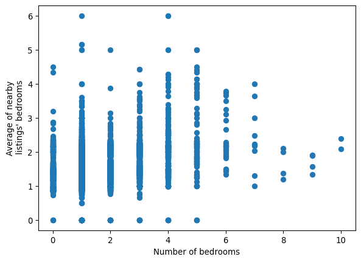
If we were instead interested in the most common number of bedrooms, rather than the average, we could use the lag_categorical function, which will consider each value as a category and return the most common value in each neighbor set:
local_mode = weights.lag_categorical(
d500_w, airbnbs_albers[["bedrooms"]].values
)Since we are now treating the number of bedrooms as a discrete feature, we can use a crosstab from pandas to examine the relationship between a listing and the typical size of listings nearby:
crosstab = pandas.crosstab(
airbnbs_albers.bedrooms, local_mode.flatten()
)
crosstab.columns.name = "nearby"
crosstab| nearby | 0.0 | 1.0 | 2.0 | 3.0 | 4.0 | 5.0 | 6.0 | 7.0 |
|---|---|---|---|---|---|---|---|---|
| bedrooms | ||||||||
| 0.0 | 4 | 392 | 40 | 7 | 1 | 1 | 0 | 0 |
| 1.0 | 2 | 3063 | 216 | 32 | 19 | 5 | 0 | 1 |
| 2.0 | 1 | 978 | 267 | 12 | 4 | 1 | 0 | 0 |
| 3.0 | 1 | 428 | 164 | 37 | 11 | 2 | 1 | 0 |
| 4.0 | 1 | 162 | 58 | 14 | 31 | 5 | 2 | 0 |
| 5.0 | 0 | 52 | 16 | 2 | 9 | 19 | 0 | 0 |
| 6.0 | 0 | 14 | 9 | 1 | 4 | 1 | 0 | 0 |
| 7.0 | 0 | 5 | 1 | 2 | 1 | 0 | 0 | 1 |
| 8.0 | 0 | 3 | 1 | 0 | 0 | 0 | 0 | 0 |
| 9.0 | 0 | 3 | 1 | 0 | 0 | 0 | 0 | 0 |
| 10.0 | 0 | 2 | 0 | 0 | 0 | 0 | 0 | 0 |
From the table we can see the most common case (N=np.int64(3063)) is properties with one bedroom surrounded mostly by other properties with also only one bedroom. Similarly we also find out, for example, that the two properties with ten bedrooms in the dataset are surrounded by properties with mostly two bedrooms. The remaining cells in the table can be interpreted in a similar fashion.
If more complicated statistics are required, it can help to reexpress the construction of summary statistics as a reduction of the adjacency list representation of our weights, as done in Chapter 4. To recap, the adjacency list is a pandas.DataFrame where each row contains a single link in our graph. It contains the identifier for some focal observation, the identifier for some neighbor observation, and a value for the weight of the link that connects the focal and neighbor:
adjlist = d500_w.to_adjlist()adjlist.head()| focal | neighbor | weight | |
|---|---|---|---|
| 0 | 0 | 136 | 0.023256 |
| 1 | 0 | 279 | 0.023256 |
| 2 | 0 | 317 | 0.023256 |
| 3 | 0 | 616 | 0.023256 |
| 4 | 0 | 761 | 0.023256 |
If we had the values for each for the neighbors in this adjacency list table, then we could use a groupby() to summarize the values of observations connected to a given focal observation. This merge can be done directly with the original data, linking the neighbor key in the adjacency list back to that observation in our source table:
adjlist = adjlist.merge(
airbnbs_albers[["bedrooms"]],
left_on="neighbor",
right_index=True,
how="left",
)
adjlist.head()| focal | neighbor | weight | bedrooms | |
|---|---|---|---|---|
| 0 | 0 | 136 | 0.023256 | 1.0 |
| 1 | 0 | 279 | 0.023256 | 3.0 |
| 2 | 0 | 317 | 0.023256 | 2.0 |
| 3 | 0 | 616 | 0.023256 | 1.0 |
| 4 | 0 | 761 | 0.023256 | 1.0 |
Now, we need only to group the adjacency list by the focal observation and summarize the bedrooms column to obtain the median number of bedrooms for each focal observation.
adjlist.groupby("focal").bedrooms.median()focal
0 1.0
1 2.0
2 1.0
3 1.0
4 1.0
...
6105 1.0
6106 1.0
6107 1.0
6108 1.0
6109 1.0
Name: bedrooms, Length: 6110, dtype: float64Since the mean and/or mode are the most commonly used measures of central tendency, the lag_spatial and lag_categorical functions cover many of the required uses in practice.
14.3.1.3 “Ring” buffer features
Sometimes, analysts might want to use multiple “bands” of buffer features. This requires that we build summaries of the observations that fall only within a given range of distances, such as the typical size of houses that are further than 500 meters, but still within one kilometer. This kind of “ring buffer”, or annulus, is a common request in spatial analysis, and can be done in substantially the same way as before by increasing the threshold in a DistanceBand weight.
We can use our 500 meters weights from before to build the average again:
average_within_500 = weights.lag_spatial(
d500_w, airbnbs_albers[["bedrooms"]].values
)Then, we need to build the graph of Airbnbs that fall between 500 meters and 1 kilometer from one another. To start, we build the DistanceBand graph of all listings closer than 1 kilometer:
d1k_w = weights.DistanceBand.from_dataframe(
airbnbs_albers, threshold=1000, silence_warnings=True
)Then, using the weights.set_operations module, we can express set-theoretic relationships between graphs. Here, we need to remove the links in our 1 kilometer graph that are also links in the 500 meters graph. To do this, we need w_difference(d1k_w, d500_w), the difference between the one kilometer graph and the 500 meters graph:
d1k_exclusive = weights.set_operations.w_difference(
d1k_w, d500_w, constrained=False
)Then, we can compute the average size of listings between 500 meters and 1 kilometer in the same manner as before using our d1k_exclusive graph, which now omits all edges shorter than 500 meters.
d1k_exclusive.transform = "r"
average_500m_to_1k = weights.lag_spatial(
d1k_exclusive, airbnbs_albers[["bedrooms"]].values
)('WARNING: ', 762, ' is an island (no neighbors)')
('WARNING: ', 907, ' is an island (no neighbors)')
('WARNING: ', 976, ' is an island (no neighbors)')
('WARNING: ', 1003, ' is an island (no neighbors)')
('WARNING: ', 1776, ' is an island (no neighbors)')
('WARNING: ', 1867, ' is an island (no neighbors)')
('WARNING: ', 2789, ' is an island (no neighbors)')
('WARNING: ', 2841, ' is an island (no neighbors)')
('WARNING: ', 3130, ' is an island (no neighbors)')
('WARNING: ', 3138, ' is an island (no neighbors)')
('WARNING: ', 3184, ' is an island (no neighbors)')
('WARNING: ', 3604, ' is an island (no neighbors)')
('WARNING: ', 3748, ' is an island (no neighbors)')
('WARNING: ', 3962, ' is an island (no neighbors)')
('WARNING: ', 3989, ' is an island (no neighbors)')
('WARNING: ', 4366, ' is an island (no neighbors)')
('WARNING: ', 4443, ' is an island (no neighbors)')
('WARNING: ', 4627, ' is an island (no neighbors)')
('WARNING: ', 4764, ' is an island (no neighbors)')
('WARNING: ', 4885, ' is an island (no neighbors)')
('WARNING: ', 4989, ' is an island (no neighbors)')
('WARNING: ', 5014, ' is an island (no neighbors)')
('WARNING: ', 5536, ' is an island (no neighbors)')
('WARNING: ', 5733, ' is an island (no neighbors)')
('WARNING: ', 5756, ' is an island (no neighbors)')
('WARNING: ', 5790, ' is an island (no neighbors)')
('WARNING: ', 5796, ' is an island (no neighbors)')
('WARNING: ', 5808, ' is an island (no neighbors)')
('WARNING: ', 6005, ' is an island (no neighbors)')
('WARNING: ', 6026, ' is an island (no neighbors)')
('WARNING: ', 6049, ' is an island (no neighbors)')
('WARNING: ', 6068, ' is an island (no neighbors)')Thus, as we can see in Figure XXX15XXX (generated by the code below), the two features contain distinct, but related, information, and both may be valuable in their own right when attempting to predict outcomes of interest.
# Plot scatter
plt.scatter(
average_within_500, average_500m_to_1k, color="k", marker="."
)
# Rename horizontal axis
plt.xlabel("Average size within 500 meters")
# Rename vertical axis
plt.ylabel("Average size\n beyond 500m but within 1km")
# Plot line of 45 degrees
plt.plot(
[0, 5],
[0, 5],
color="orangered",
linestyle=":",
linewidth=2,
label="1 to 1",
)
# Add legend
plt.legend();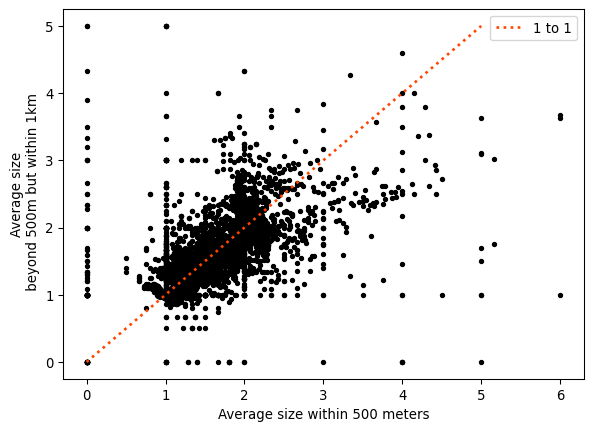
As the plot shows, although the relationship between both is positive, there is quite a bit of variation and departure from the (red) line of equality. These represent cases with either larger (above the line) or smaller (below) average size in the 500 meters to 1 kilometer ring than in the 500 meters buffer.
14.3.2 Clustering as feature engineering
One unique way to use spatial or features information within your data as a feature in your existing models is to use clustering, as we saw in Chapters 8 and 10, respectively. This can provide an indication of whether an observation exists in a given “place” geographically, or if an observation is a specific “kind” of observation. Data reduction of many variates into a derived categorical feature can be useful in training models. This is even more useful when the spatial location of a given observation indicates a useful characteristic about the kind of observation that may be found at that location.
While sometimes we might prefer to introduce space and (co-)location through our model (as we did in Chapter 11), others we can instead use (spatial) cluster labels themselves as features. For example, to cluster the listings based on their location, we can use hierarchical DBSCAN (Campello, Moulavi, and Sander 2013), an improved variant of the traditional DBSCAN algorithm used in Chapter 8. We import it through its own package (McInnes, Healy, and Astels 2017):
from hdbscan import HDBSCANTo apply to our Airbnb data, we need the coordinates as a two-dimensional array of XY pairs:
coordinates = numpy.column_stack(
(airbnbs_albers.geometry.x, airbnbs_albers.geometry.y)
)With a little tuning, we can decide on an effective parameterization. The main advantage of HDBSCAN over the traditional approach is that it reduces the number of tuning parameters from two to one: we only need to set the minimum number of observations we want to define a cluster. Here, we look for relatively large clusters of Airbnbs, those with about 25 listings or more, fit them to our array of coordinates, and store the cluster labels identified:
labels = HDBSCAN(min_cluster_size=25).fit(coordinates).labels_The spatial distribution of these clusters will give us a sense of areas of San Diego with relatively high density of the observations. But the labels object does not contain clusters, only observation memberships. To derive those clusters geographically, we construct the convex hull of the observations in each detected cluster, creating thus a polygon that delimits every observation that is part of the cluster:
hulls = airbnbs_albers[["geometry"]].dissolve(by=labels).convex_hullThe polygons in hulls (and displayed in Figure XXX16XXX) provide an intermediate layer between the granularity of each individual location and the global scale of San Diego as a geographical unit. Since people tend to make locational decisions hierarchically (e.g., first they select San Diego as a destination, then they pick a particular part of San Diego, then choose a house within the area), this approach might give us reasonable insight into enclaves of Airbnb properties:
# Set up figure and axis
f, ax = plt.subplots(1, figsize=(9, 9))
# Plot individual Airbnb locations
airbnbs_albers.plot(
# Color by cluster label
column=labels,
# Consider label as categorical
categorical=True,
# Add 50% of transparency
alpha=0.5,
# Include legend
legend=True,
# Draw on axis `ax`
ax=ax,
# Use circle as marker
marker=".",
# Position legend outside the map
legend_kwds={"bbox_to_anchor": (1, 1)},
)
# Plot convex hull polygons for each cluster label
# except that for -1 (observations classified as noise)
hulls[hulls.index != -1].boundary.plot(color="k", ax=ax)
# Add basemap
contextily.add_basemap(
ax,
crs=airbnbs_albers.crs.to_string(),
source=contextily.providers.CartoDB.VoyagerNoLabels,
)
# Remove axes
ax.set_axis_off();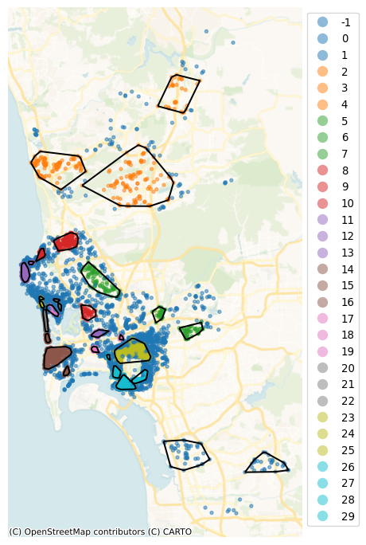
Note how the hierarchical nature of HDBSCAN, which picks density thresholds locally is at work in the map, where some of the clusters (e.g., orange ones in the north) display lower density than parts of the center which are not part of any cluster. These results also capture some information about the price of a listing. Figure XXX17XXX (generated with the code below) shows this by plotting the distribution of prices across the detected clusters.
# Set up figure
f = plt.figure(figsize=(8, 3))
# Add boxplots of price by HDBSCAN cluster
ax = airbnbs_albers.assign(labels=labels).boxplot(
# Plot distribution of 'price'
"price",
# Group by cluster label, generating one boxplot/cluster
by='labels',
# Do not display individual outlier observations
flierprops=dict(marker=None),
# Draw visualization on the current axis (inside `f`)
ax=plt.gca(),
)
# Set label for horizontal axis
ax.set_xlabel("HDBSCAN cluster")
# Set labels for vertical axis
ax.set_ylabel("price ($)")
# Remove default figure title
plt.gcf().suptitle(None)
# Remove default axis title
ax.set_title(None)
# Re-adjust vertical value range for easier legibility
ax.set_ylim(0, 1250);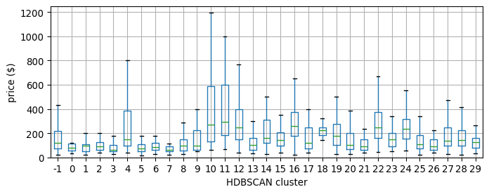
If we want to capture the variation picked up by membership to these clusters in a regression model, we could use these labels as the basis for spatial fixed effects, for example, as we saw in Chapter 11.
14.4 Conclusion
Feature engineering is a powerful way to enrich your data and make the most out of them. It is often within reach whether you are able to mix in auxilliary data or not. At a minimum, it only requires that new variables are constructed from your existing data; however, if you have access to more data, spatial feature engineering provides the ultimate linkage key, a flexible and powerful tool with which you can unlock the value held in many other datasets that you may have access to even if they are not obviously connected to your own.
We have structured all the approaches presented in this chapter along two main groups: those which allow you to augment a given dataset, which we have termed map synthesis; and those that enable connecting disparate datasets through space. In both cases, each operation involved in feature engineering, such as determining what the average value is in the area near each observation or identifying whether observations exist as part of a “cluster”, are relatively simple operations. As building blocks that may be combined with each other, they build large, rich, and useful datasets that can be used directly in your existing methods of analysis.
Beyond feature engineering, statistical techniques we discuss in this book (particularly in Chapters 10 and 11) can leverage spatial structure directly during learning/inference. These techniques allow you to embed space in non-spatial models to make them “geography aware”. Furthermore, the techniques in this chapter (and the methods that extend upon them) are immediately useful for most practicing data scientists, and they can be integrated into nearly any analytical method or approach.
14.5 Questions
- Thinking of your own research, provide an example where map matching would be a useful spatial feature engineering approach? How about an example where map synthesis would be useful for your research?
- In the Counting nearby features example early in the chapter, there is a potential issue with under-counting the number of nearby bars and restaurants for certain Airbnbs in the dataset. Which Airbnbs are subject to neighbor under-counts and why?
- How would you correct the under-count in the previous question?
- Dasymetric mapping may introduce spurious spatial autocorrelation (see Chapters 6 and 7) through the interpolation process. How does this occur and why is it important to acknowledge?
- From the previous spatial regression chapter, is the SLX model a map matching or a map synthesis technique?
- Feature engineering can be used in many different applied contexts. When might feature engineering actually not improve a model?
14.6 Next steps
For more information on machine learning methods, it is difficult to beat Introduction to Statistical Learning by:
James, Gareth, Daniela Witten, Trevor Hastie, and Robert Tibshirani. 2021. Introduction to Statistical Learning (2nd Edition). Wiley: New York.
In addition, there are many geospatial relationships that can be leveraged to merge datasets together. These spatial join techniques often require quite a bit of background understanding in geocomputation, computation that focuses on the basic/fundamental geometric operations and relationships between geographic objects. However, simple introductions are offered by our partner book:
Tenkanen, Henrikki, Vuokko Heikinheimo, and David Whipp. 2023. Python for Geographic Data Analysis. CRC Press: Boca Raton, FL. https://pythongis.org
Finally, references on geographic interpolation methods are sometimes hard to come by, but a good and readable introduction to the domain is offered by:
Comber, Alexis and Wen Zeng. 2019. “Spatial Interpolation using areal features: A review of methods and opportunities using new forms of data with coded illustrations.” Geography Compass 13. https://doi.org/10.1111/gec3.12465